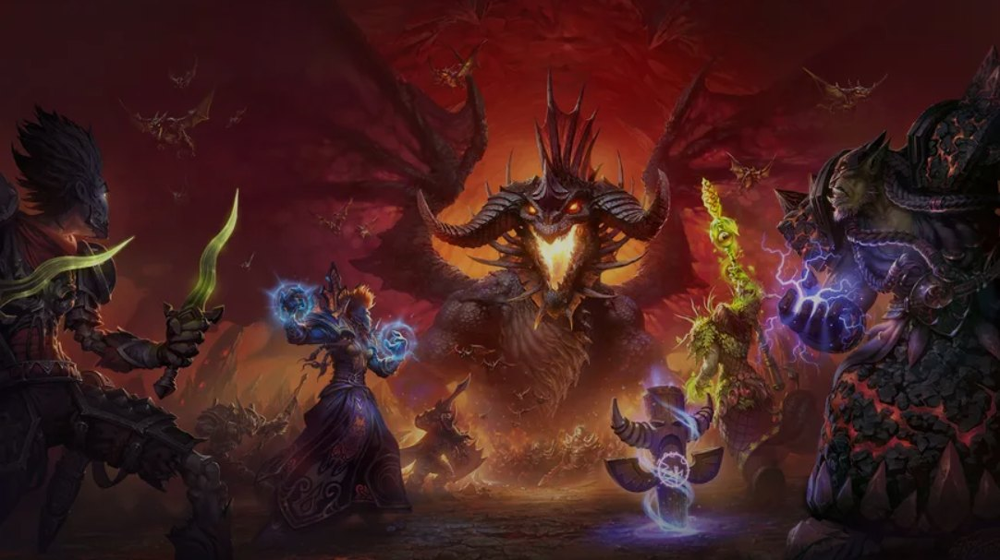

Donjons et raids de WoW Forever
Tous les donjons de Classic reviennent, accompagnés de neuf nouveaux donjons à 5 joueurs du niveau 13 au 60 : six dans les Royaumes de l'Est et les trois plus difficiles en Kalimdor. Clique sur un donjon pour ouvrir sa page : emplacement, boss, butin et quêtes.
📅 Mise à jour le 4 novembre 2026🛠 Patch 1.60.1.70755

| Donjon | Niveaux | Zone | Guides externes |
|---|
Niveaux indicatifs, susceptibles d'évoluer. Les guides s'ouvrent dans un nouvel onglet : FR = en français, EN = en anglais. « Classic » signale un guide écrit pour WoW Classic, en attendant une version Forever.
Raids
 9 déc. 2026
9 déc. 2026Ouverture des raids
Les premiers raids débloquent un peu plus d'un mois après la sortie.
 Nouveau
NouveauRaids 10 et 20 joueurs
En plus des formats de Classic, des raids pour groupes plus réduits.
 2027
2027Encore des donjons
Deux nouveaux donjons prévus au printemps et deux autres avec la mise à jour d'été.